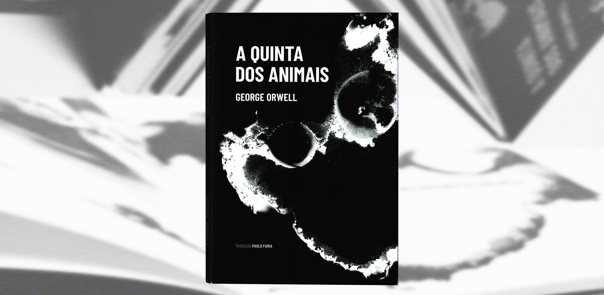
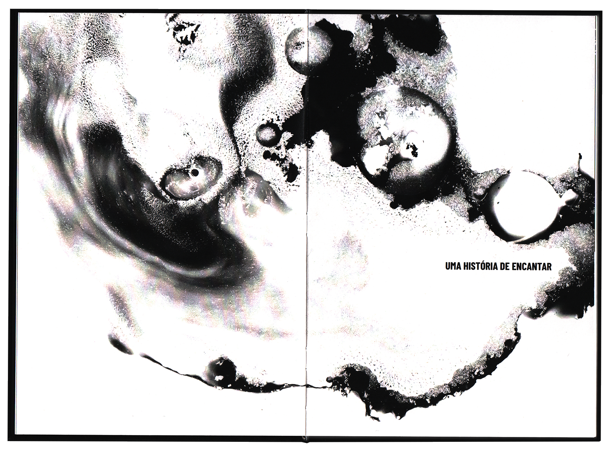
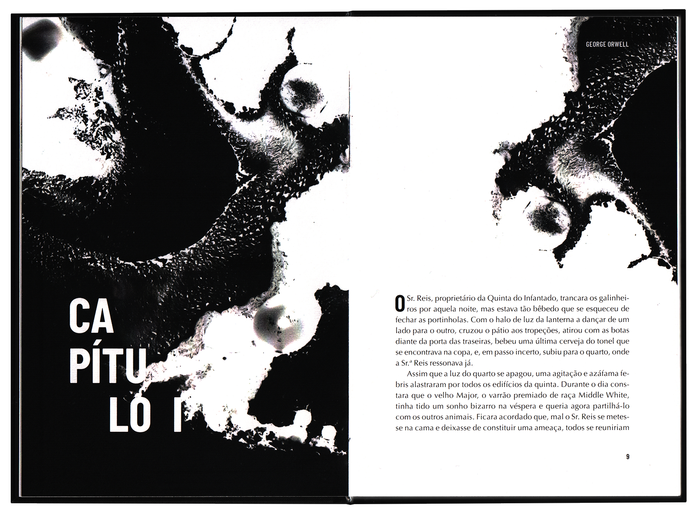
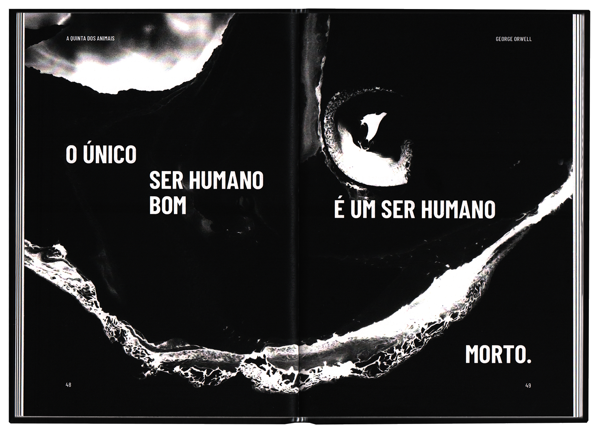
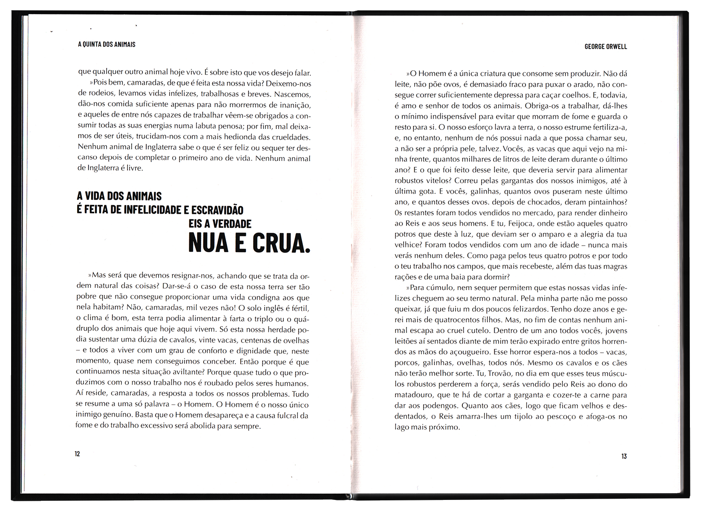
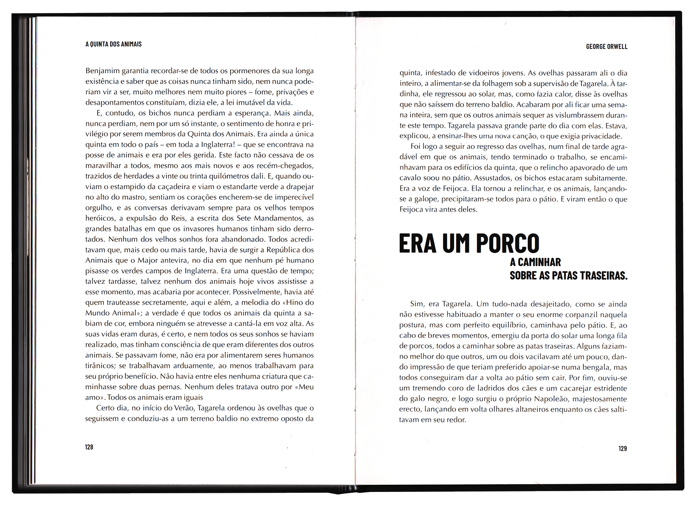
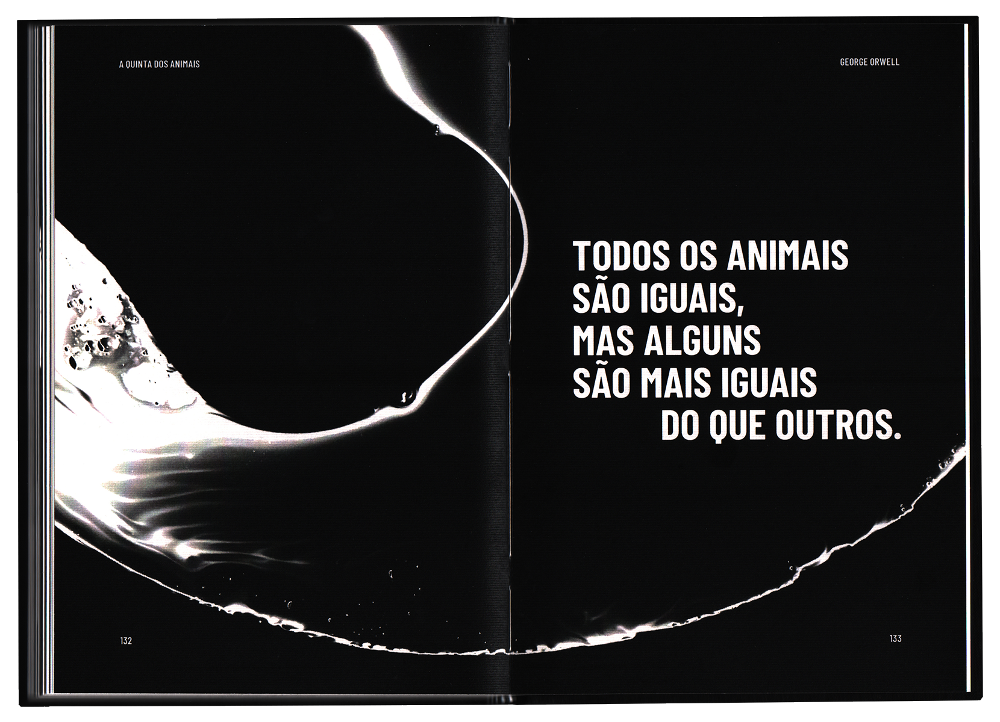
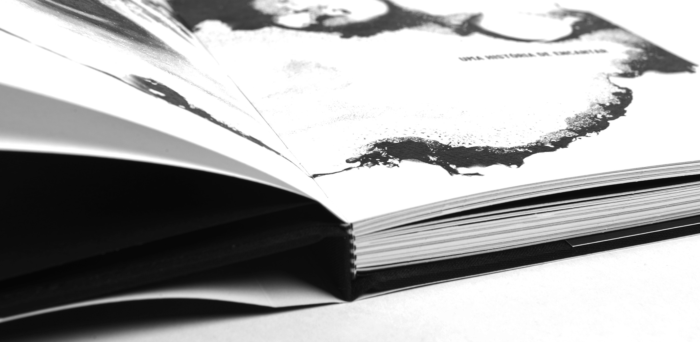
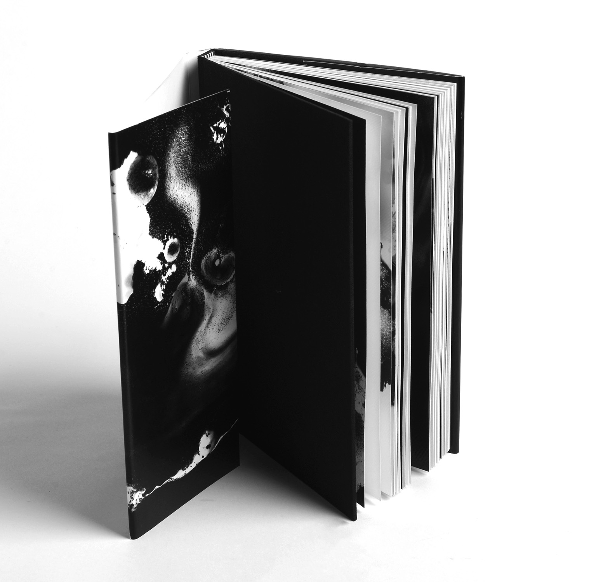
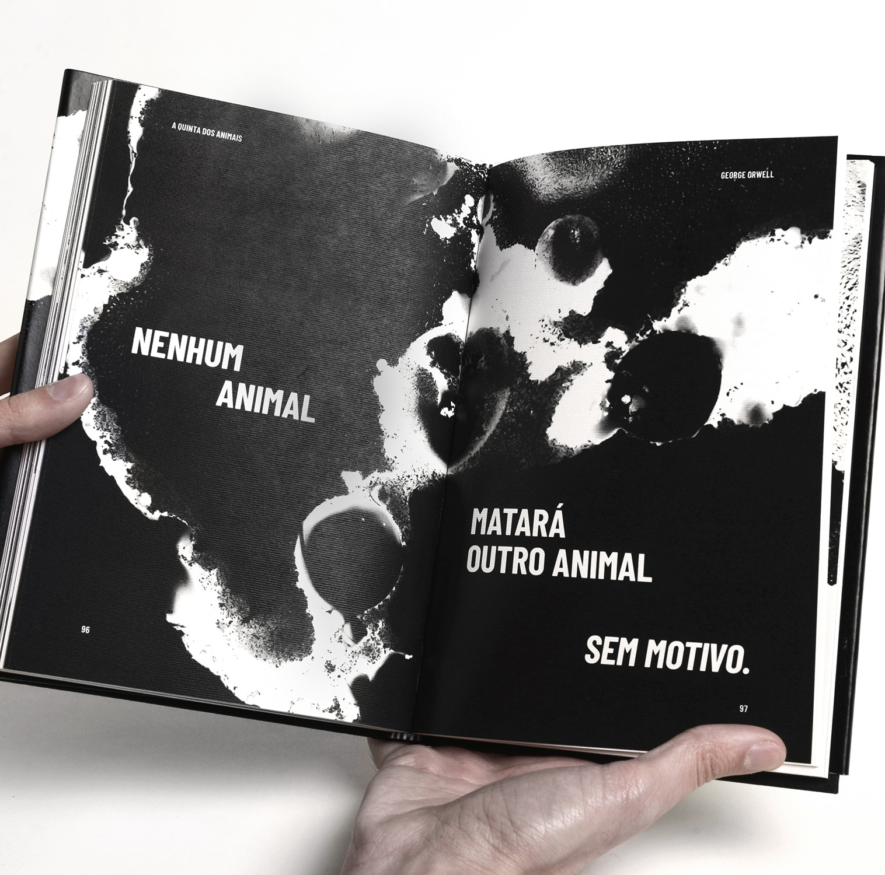

This re-edition of Animal Farm aims to capture the growing sense of rebellion present throughout the plot. Both the images and the paper itself were chosen for their texture, in order to give an organic look that captures the nature of the animals themselves. In addition, the high contrast and typographic compositions aimed to emphasise the aggravating atmosphere and the feelings associated with the Rebellion. The goal was to keep the reader in a constant state of suspense throughout the plot.









